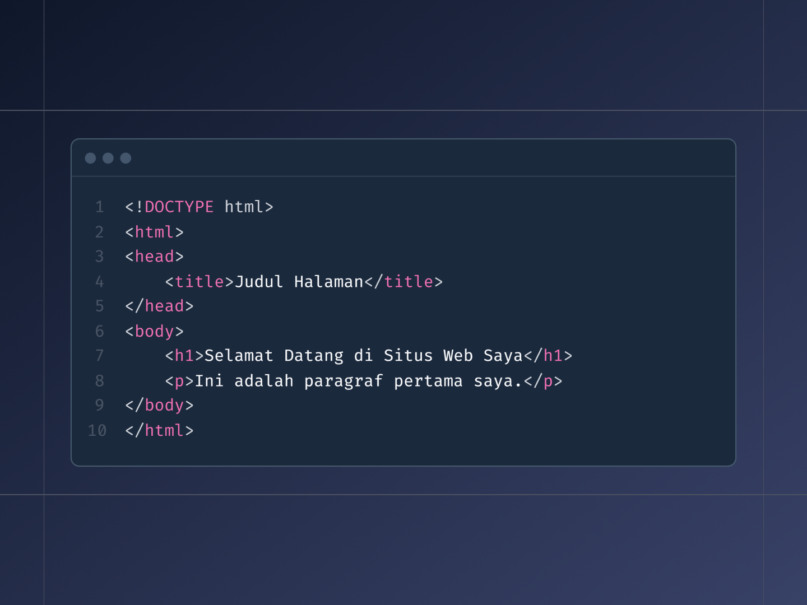
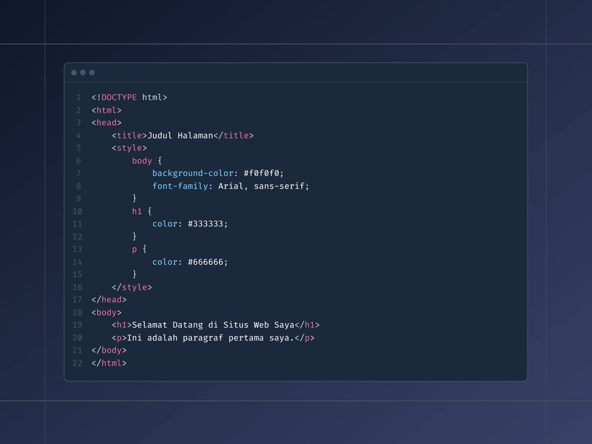
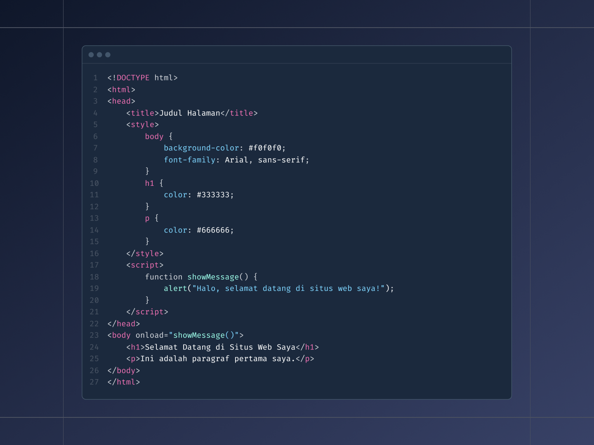

Bahasa dasar yang wajib diketahui dan diperhatikan oleh semua developer baik yang junior maupun senior.
Pendahuluan
Bahasa pemrograman web adalah fondasi dari pengembangan web modern. Dalam artikel ini, kita akan membahas tiga bahasa utama yang digunakan dalam pengembangan web: HTML, CSS, dan JavaScript. Masing-masing bahasa ini memiliki peran yang unik dan penting dalam membangun situs web yang interaktif dan responsif.
HTML: Hyper Text Markup Language
HTML adalah bahasa markup standar untuk membuat halaman web. HTML menyediakan struktur dasar halaman web dengan menggunakan elemen-elemen yang didefinisikan oleh tag.
Contoh kode html sederhana.

: Menentukan tipe dokumen dan versi HTML yang digunakan. : Elemen akar yang membungkus seluruh konten halaman. : Bagian yang berisi informasi meta tentang dokumen, seperti judul. : Bagian yang berisi konten yang akan ditampilkan di halaman web.
CSS: Cascading Style Sheet
Apa itu CSS? CSS adalah bahasa yang digunakan untuk mendesain dan menata halaman web. CSS memungkinkan pengembang untuk mengatur tampilan elemen HTML secara terpisah dari struktur dokumen.
Contoh penggunaan kode css pada web.

background-color: Mengatur warna latar belakang halaman. font-family: Mengatur jenis font yang digunakan di seluruh halaman. color: Mengatur warna teks untuk elemen tertentu.
Javascript
Apa itu JavaScript? JavaScript adalah bahasa pemrograman yang digunakan untuk membuat halaman web lebih interaktif. JavaScript memungkinkan pengembang untuk menambahkan fitur dinamis seperti animasi, validasi formulir, dan pengambilan data dari server.
Contoh penggunaan kode javascript pada web.

<script>: Tag untuk menyisipkan kode JavaScript. showMessage: Fungsi JavaScript yang menampilkan pesan selamat datang menggunakan kotak dialog.
Berikut contoh button yang dibuat menggunakan javascript: